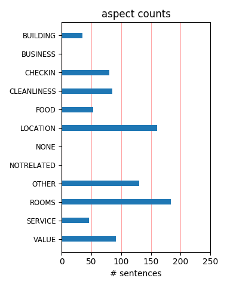
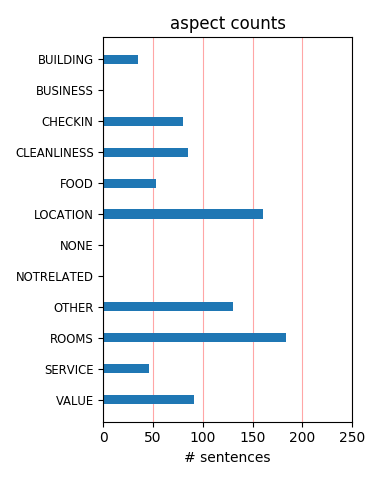

A little slow at the front counter with the availablity of rooms at check in time. Had to wait even though it was afer 2pm and after our estimated time of arrival. Room was clean and tidy, quiet location. We had a sky villa, worth the money.
We stayed at the Meriton on kent Street for two nights to attend an expo at Darling harbour, It is always clean, the beds are comfortable and the staff are very friendly. It is a short walk to the exhibition buildings and nice and close to Chinatown.
These are actually serviced apartments - I was staying in a 2 bedroom suite, which was great value, very clean, very modern, and had alot of amenities: dishwasher, laundry en suite, 2 bathrooms, reliable Internet, balcony. I would MORE THAN RECOMMEND this hotel to anyone.
We were really pleased with our 2 bedroom, 2 bathroom room. The staff were really friendly and helpful, including getting us extra towels and blankets. They also helped organise a $50 van to the airport for all of us. Would definitely stay again as it's very central and convenient.
compared to Meriton Pitt St, the building looked a bit tired. the apartment was nice, but disappointingly my room had a slight smell of cigarette smoke which affected my sleep quality. the service was good. the location was excellent. after all, will consider staying with them next time.
Loved it here, we had a studio apartment which was clean and well kitted out. We were able to catch up on our washing and do some cooking which was great. The pool here is also lovely. It was also a really good price considering where you are in this lovely city, would definately stay again.
Booked for one night a two bedroom 2 bathroom skyview room. Well worth the extra as being on higher level meant no noise, view of Darling Harbour ok. Quiet for Sydney, clean and comfortable. Close to restaurants and walking distance to shops. Pity couldn't stay longer, perfect for a family as it had a full kitchen and laundry. Would return.
I stayed in a studio apartment for $165 a night. This is a great place to stay. The location is perfect, with cinemas, restaurants and shopping on your doorstep. It is very central. The studio apartment I stayed in was spacious and clean. Modern furnishings, with good size TV. Staff are pleasant. This place is great value for money. I will definitely stay here again!
I stayed for 3 nights from 1/12/2011. I have been here before,and this stay was no disappointment. Walking distance to all of the CBD and Darling Harbour. Quiet rooms with a fresh feel and clean bathrooms. Hot water in the shower night and day. The price can put you off at times - but keep an eye on their specials, when the rooms are under $200/night - they are worth it.
stayed here for 5 nights. got a skyview room looking out over darling harbour, up on the 52nd floor. the place was amazing!! massive apartment, really clean, great aircon units. amazing views. really quiet at night. all in all, brilliant. only negative was the tv, not a huge amount of channels to choose from. free foxtel would have been great. would defo stay here again.
Check in speedy in a one bed apartment, we arrived early and they did there best to accommodate us as soon as possible. Huge apartment well stocked with tea milk etc. Lots of towels. washer, dryer, lots of space and very comfy beds. It was aweekend but although very busy we were never disturbed by noise. Overall very good value for an excellant location in a city like Sydney.
Good room. Not a lot of hall traffic to wake you up in the middle of the night. Clean. Staff was pleasant. Location was very convenient. Few blocks from Darling Harbour, Chinese town, and lots of shopping on George Street. Take the train from the airport and walk 1.5 blocks. Very happy with the choice, especially because it was so easy to get on a ferry to escape downtown whenever we wanted.
Another great stay at a Meriton property. We stayed in a one bedroom apartment which was very spacious and clean - excellent location close to Town Hall station - World Square monorail station and cinema complexes. Service was excellent with staff efficient and helpful. Have stayed with the Meriton properties in Broadbeach, Parramatta and Pitt Street and Meriton always provides a great experience.
We stayed for 4 nights in April. Service was quite good. We arrived 8am after overseas flight but friendly desk staff helped store baggage so we could explore. Rooms were spacious, location is within 2 blocks of subway and grocery store. Many restaurant choices nearby by. 10 minute walk to Darling Harbor and 25 minutes to Circular Quay if you like to walk. Area seemed very safe. Highly recommended.
Stayed here on business for just under 2 weeks. The location is great with plenty of places to eat and drink close by. The staff we friendly and helpful, for example we needed one of the room converted from a Double bed to a twin and they took care of this at 8pm at night which proves they have staff on hand any time of the day. Nice indoor pool with an acceptable gym. All in all apartments were nice.
Booked a one bed apt for a overnight trip to sydney. It is so nice to be able to enter the room, and not feel that you are sitting on the bed to watch tv or have dinner - the ability to cook for oneself is great. Location wise - this place is awesome near the outdoor shops of kent street, the trendy shopping of the QVB and Pitt St Mall, and the entertainment and night life of china town, darling harbour.
This is the 2nd time we have stayed here. Last time we had a fabulous 2 bed suite this time just a studio. When we arrived the balcony door was not shut properly and the wind howled through the gap (the doors are screwed shut). When we complained it was fixed immediately. The studio showed some signs of wear (eg clunky shower door but at least it wasn't a curtain) but it was very very clean and serviced daily.
The apartments are in a good location and are ok if you can get a good rate but they are not worth the $400+ rate that is being asked. The 2 bedrooms are comfortable but the lounge furnishings are nothing special. Also the lounge areas of the corner apartments are much smaller but you do get a view. I will contradict myself in saying that because of the location I would stay again but only if we could get a better rate.
Overall: Apartement very nice, clean and furnishings are very new but the pictures in tripadvisor may mislead a little bit since some pictures show a big balcony. The problem is: you can't go out and have a smoke on your beautiful balcony since the hotel management has closed all the balconies! Therefore the hotel is an absolute no-go for smoking persons... In my opinion they should clearly state it on their Internet site....
The apartment was nice, comfortable, clean and spacious. We were only on the 15th floor (reception/ground is on the 10th floor, so 15 is not high up) and consequently the view was nothing special - looking out over the local shops. Reasonably well located, within walking distance of Darling Harbour, Oxford St shops and bars, CBD attractions. We didn't spend much time in the apartment so can't comment on the kitchen/tv facilities.
I recently stayed 3 nights in this Hotel. Everything was modern and clean. The room was spacious, comfortable and had a private balcony overlooking George Street. The hotel features a good quality gym, sauna, heated pool and spa. I received a warm greeting on check in and found the staff to be friendly and helpful throughout my stay. My only complaint would be the traffic noise but that's just sydney. I would definately stay here again.
Very spacious 1 bed apartment with great views over Darling harbour. Well equiped and comfortable and 5 mins walk to Darling harbour. Close to Museum and town Hall stations as well as the monorail. Many oriental eateries on the doorstep but probably Darling harbour for any variation. Pricing structure on this and other Meritons vary considerably so if you are flexible you could get a good bargain. Front desk sometimes chaotic and not very helpful.
Stayed for 2 nights in one bedroom apartment, spacious living area with small balcony, washing machine and dryer, microwave, toaster, big fridge. Nice clean bathroom, but no shelf/bench top for storing toiletries. Staff were helpful, though we paid for late check out, cleaners kept trying to clean the room at the earlier time. Located in Spanish quarter, walking distance to everything, loved the location. Would stay here again depending on the price.
My girlfriend and I stayed there only one night last year to avoid driving back to the Western suburbs after a night out. The location is ideal, right in the city centre. The apartment was really spacious (1 separate bedroom) and clean! We definitely thought that it could be ideal to stay in Sydney for a longer period as the flat comes with a fully equipped kitchen, washing machine and dryer. This accommodation comes also cheaper than hotels in the city.
Exhibiting at the Sydney Exhibition Centre calls for long days setting up and attending the stand. We took Trip Advisor recommendations and stayed at the Meriton Apartments in Kent Street. A perfect choice for a central location close to hundreds of restaurants, a few minutes walk to Darling Harbour and with basement car parking. We would recommend the Meriton Apartments in Kent Street to anyone wanting a spacious and well appointed apartment in central Sydney.
Whenever I travel to Sydney, CBD I always use the Meriton Serviced apartments. This time it was the Kent St apartments, but I have also stayed at Pitt St. They are conveniently located just a ten or fifteen minute walk from Darling Harbour, Circular Quay, The Rocks and Chinatown. You can also use the monorail to get around if you prefer. You can travel by train or taxi from the airport. They are clean and comfortable and the staff are always courteous and helpful.
We stayed for the weekend in two x two bedroom apartments because we were a family group of seven.The apartments were spacious and well appointed.Most of the staff were helpful and gracious.It is situated close to a nice restaurant called 'Mamma's' where we ended up having breakfast and dinner! and it's quite close to the train station and shops.I think if I was staying in Sydney with just my husband I would prefer a hotel but it was the perfect option for the group.
I was in Sydney for 5 days with work. These are apartment style accomadation as as such, not much at front desk, but the rooms and clean fresh and look new. Good beds and while parking is a bit expensive, there are plenty of spots and easy access. Some noice from the streets below, however if you are ona higher floor, then this would probably be less. I also booked direct on the web site as someone else had suggested, which was cheaper than wotif etc I will be back again.
We had a great 2 room apartment. Each room had a bathroom. Central living space. Kitchen and even a washer & dryer. Great location. Close to Darling Harbor and walking distance to Circular Quay (maybe about a mile - easy walk). Great space to share with another couple. Enough privacy for each couple, but nice to be able to hang out and cook (and an additional plus to do laundry). Food in Sydney was pricey so we enjoyed the use of the kitchen to save some money. Also, nice view.
We had a 2 bedroom apartment for 3 nights in Jan, 2010. Everything was clean and modern, and the room smelt fresh. Friendly helpful staff, excellent indoor pool. Close to supermarkets and transport - we used the monorail heaps, and caught a bus 5 minutes away that took us to the Rocks. Walking distance to Darling Harbour. Lots of restaurants, bar across the road with fantastic cheap food. Taxi rank right outside. Great location and service, will stay there on next visit to Sydney.
The Meriton Apts. Kent St. Sydney were much nicer than I expected. The apts. are very roomy and extremely clean. The service was excellent, the price was very reasonable. We had plenty of room for our family of 5, including 3 teens. We were in walking distance to great shopping on George St, the monorail and Circular Quay to see the Opera House and to catch a ferry to Manly (highly recommend). We also walked to Darling Harbor and Chinatown. Would highly recommend Meriton properties.
Meriton units are all the same. You know what you are going to get. Plenty of space, clean, friendly helpful staff, good location, easy parking, everything works, good price. 

The room was on floor 37 and was very quiet even though it faced George Street. The view was not scenic. There is no free WiFi.

 The bed is too soft, but this is subjective.

 We will go back but I could not stay for long because of the bed. 

 That we will go back is the best recommendation I can give.
This property offers excellent service from staff that are always available to answer questions and is located close to darling harbour and China town which offers a huge selection of restaurants. The rooms are modern, clean, well maintained and fully equipped. Parking is available on site with the usual Sydney cost. The only frustration at Meriton is the long wait for lifts during peak periods. If you are flexible (other than bang on 10am) with your morning departure time this will not be an issue.
We stayed in a one bedroom apartment which was relatively spacious, balcony with furniture, work desk, full kitchen and full laundry. Very clean and comfortable. Two air conditioning units - one in the bedroom and one in the living room and both individually controlled (great for those who like a cooler bedroom). Very nice indoor pool and gym area. Full supermarket only one block away, monorail or train station two blocks, Darling Harbour only a short stroll. Overall a very comfortable base to explore Sydney.
My husband and I rented an apartment over the New Year holiday. It was a good size and had a balcony. We were told it was the largest studio: room 1501. The building is right next to the Town Hall and convenient to George Street and Darling Harbor. We spent a lot of time down by the Opera House and The Rocks. We could walk there in about 20 minutes. There is also a free bus down to the Circular Quay area (Opera House). It's green. Number 555. Nice apartment, easy check-in and check-out. Clean. Good area. Can't complain.
We stayed at Meriton Kent Street for 4 nights over Easter. The location couldn't be better - right in the heart of Sydney and close to everything. Our studio apartment was a good size and spotlessly clean. Staff were efficient and helpful, but remember this is not a hotel, so doesn't offer the full range of hotel services. Parking was expensive but as expected in this part of town. The only downside is the very slow elevators (not enough for the number of floors) and the outside noise - sirens etc. We recommend earplugs.
This place was great, remember it's a service hotel and you will be pleased. Clean, New, Bright, Good security, elevators were not bad. Pool was on the cool side, but had it's charm for my daughter. The real deal is in the price, location and newness. Great bars around and lots of food choices. We had 3 rooms which included a mix of all available options and all were a bargain in relation to full service hotels. I would not hesitate recommending this hotel to everyone. P.S dont get locked out on the patio, it locks behind you.
Apartment style rooms. Ours had a Washer/dryer, small kitchen, dining area, living room, bedrooma nd bathroom. Also had a nice balcony with a table and chairs. We used the fitness center, basic but nice. The pool and jacuzzi were good. Pool was a bit cool as was the jacuzzi. The location was great for getting to Darling Harbour. Lets of activities and places to eat & drink nearby. Very important since we did not have a car! The yaki-soba place in the bottom floor of the hotel was awesome! We ate there several times. Very authentic!
This was our annual girls weekend, being a group of 6 mothers ranging from mid 20's to mid 30's. Our apartment was on Level 56 with 3 bedrooms. When we walked into the apartment we couldn't believe how spacious and modern it was. There was no noise from the street, the rooms were clean, the view was lovely. We felt like we were up in the clouds we were so high up! We spent the evenings in the closed in balcony overlooking chinatown and glimpses of darling harbour, with some great food and wine from the takeaway restaurants close by.
Stayed here for 5 days during our trip to Sydney in July. We had a 1 bedroom w/ a king sized bed on the 53rd floor. Very nice view. Nice decor. The room was spacious. Very clean. The kitchen had a microwave/oven, washer, dryer, dishwasher, stove. The kitchen had utensils, cutlery, dishes, pots etc. If we ever returned to Sydney we will definitely stay here again. There is a pool and sauna in the building. There was also a TV, stereo/CD player, and a DVD player. The normal rate quite be expensive. But we had a discount rate of $99/day.
Great location in Spanish quarter, next to Chinatown and nearby Darling Harbour. Beautiful modern apartment, with mirrored bedroom ceiling I would have once thought tacky, but a great decor affect. Although clean due to minimalist look no eye for cleaning detail, especially in kitchen. Problem was my partner became unwell and was hospitalised, it was disappointing the hotel charged us $60 for a 1pm late checkout, we were there for 3 nights and expected a little more compassion than this. especially in this economic climate Overall recommended.
Amazing is what we thought of when we stayed here. We booked one of the penthouse apartments for 2 nights and couldn't believe how big and modern our apartment was. It was like our own house in the sky! Everything was catered for, spa, amazing views of Sydney everything. We booked at last minute and got a great deal for 2 nights . We stayed an extra night and had to transfer to their pitt st building and still we had a room up high with double balconies and was also fantastic!!! This is the place to stay every time we go to Sydney from now on!
The Meriton apartment was great, everything we hoped for. A great studio in the centre of town (we walked nearly everywhere.) Nice bed, nice bathroom etc. Only thing was that the CD player, then the microwave were broken, and we asked for them to be fixed, but it took a while for someone to fix them both times (about 3 days for the CD player.) Also they only gave us one roll of loo paper at a time... meaning we had to go to reception to get some more. But overall it was great, staff friendly, great location, modern rooms, amazing views, I would go there again.
I travelled by myself. Had immaculate studio, really high up with a fab view! Reception were very helpful when I turned up sans suitcase as a german lady had helped herself to my handluggage on the shuttle! Pool is tiny but very refreshing and when I was using it I was the only one! Nice facilities in your room, high specs and there is a supermarket close by. I was travelling for months so it was lovely to be able to cook my own food for a few days. I also had a lovely day trip to the blue mountains with breakfast at a wildlife park - for less than the money to climb the Sydney Bridge.
This was an excellent choice as we had lots of room in our studio apartment. It was very well equipped for anyone who wanted to cook a meal and it was a nice touch that they provided dishwasher tablets and sachets of laundry liquid so we were able to do some washing. There are plenty of late convenience stores nearby so we were able to buy our breakfast as we returned back at night. There was a little noise from the street below but what can you expect from such a central city location? It is a bit of a walk to Circular Quay but very close to Darling Harbour and shopping areas. Would definitely stay here again.
Stayed 5 nights in the Meriton during February at the start of our trip to Australia. It was almost 10 pm when we checked in, very efficient check in. We booked a studio apartment and it was spacious, comfortable and it contained everything you would need, washer, drier, fridge, cooker etc. The view to Darling Harbour was excellent. Despite what some posters had said about the lifts we never waited more than one minute for a lift. There was no traffic noise. The proximity to Darling Harbour and George Street excellent. Overall you might get cheaper apartments in Sydney but the Meriton is well worth the price you pay
Stayed for one night in a one bedroom apartment in January 2012. Staff here are very nice and helpful. Stayed in room 3303A which is a connected apartment (there is one door that leads you to a small hallway with two separate rooms). That was probably the only downfall of the place, I recommend to try and get a one bedroom apartment that is on its own. Room is very spacious and clean. Kitchen had all the necessities and was stocked with the required appliances. Room had a very nice view of Darling Harbour as well. Will definitely come back and stay here when I have another night out in Sydney. Good for couples and families.
Was up in Sydney for a 4 day conference and stayed at the Meriton as it was located a nice 5 minute stroll from the venue at Darling Harbour. The room I was given was on one of the upper floors and the view from the room was spectacular. The room was a good size and clean with only problems I had were how to use the washer/dryer combo (easy when I located the instructions stuck on the wall), the complete lack of water pressure in the bathroom basin (shower was nice and strong though) and the noisy fridge (turned it off at night). Aside from that, the staff were polite and courteous and my overall stay was a very positive one.
The Meriton on Kent Street was an excellent central location near many attractions ( Darling Harbour, China town) . The 2 bedroom appartment was clean comfortable quiet and spacious, the safe enclosed balcony was great and we could open windows for fresh air. We were on the 52nd floor which had a good view. We were close to many restaurants cafes and very close to Coles for food shopping. There was easy access to buses trains, and monorail. The indoor pool spa and sauna was very nice though the pool was a bit cold for winter and there wasn't anywhere suitable to sit to watch the kids when they were in the pool. I would stay there again.
We are in our 4 day here at the hotel now, it doesn't get any better for $125/nite, we are in a studio 46 floor great view super clean, great layout, comfie bed/linens, yes it is rated a 5 star, but its not by any stretch an fancy 5 star, the pool is small/ gym facalities are small / but this is one pricey city, the location is fantastic. We arrived at 10:00am we where offered a room on a lower floor, we opted to wait til 2 to have a room on a higher floor, would highly recommend this hotel. We paid an extra 100 for a week of wifi , we bought a net book for our trek. not sure how to indicaate this is a best value but thats how i would rate it
We have just returned from staying 5 nights at the Meriton kent St. It exceeded our expectations. As we booked it directly with them, we knew they couldn't guarantee us a view etc but we had our fingers crossed. On arrival, we ended up in 3902A - a fab view of Darling Harbour and panaramic views round the city as well. We couldn't have asked for more! The one bedroom apartment was also much bigger than the one shown on their website Very central location but incredibly quiet (couldn't even hear the people in the neighbouring apartment apart when they left their room. We will certainy return. Great front desk assistance at all times. Thank you Meriton Kent.
Ver comfortable rooms, great beds and pillows, excellent location, value for money, tidied daily... sounds perfect right? All except one little thing, no balcony access! There was a lovely balcony view from our 42nd floor apartment complete with nice balcony furniture, but it only served to tease you more as they are locked and "not opened for anyone". Aparently there has been some parties with things launched off the balcony but should this drive a policy that every guest will do the same? One of the main reasons i chose this hotel was for the views and the balcony. At least be up fron Meriton and remove the pictures of people on balconys and advertise that you cannot go outside.
Very impressed with the Meriton on Kent St. This is an apartment hotel so don't expect hotel style service, but the trade off is worth it. Brand new room was enourmous ( full one bedroom apartment ) with full kitchen, bathroom, laundry and lounge and good sized balcony. If you are staying for a week i would recommend an apartment like this as its a lot bigger than a hotel room. Booked this on lastminute.com, and the price was extremely good value. Admittedly we were lucky and got a corner room, the side rooms might be a little smaller? If you're looking for somewhere clean and modern with neutral decor right in the city ( metres from the centre of george street ) then this place is great.
We stayed here for just one night on the weekend and were pleasantly surprised to find we were upgraded from a studio to a 2 bedroom apartment. This accommodation is clean and spacious, the bed was comfortable and it was great to have a kitchen and balcony. Underground parking was available for added cost. Our room was on the 30th floor and had nice views from the windows and balcony. The balcony was a little noisy as is to be expected. We also noticed a little noise coming from the lifts and hallways, but nothing too bad. The only thing I didn't like was the water saving shower rose. This location was excellent for access to Chinatown, Darling Harbour Precinct and the Entertainment Centre.
This apartment has a nice layout, nice furniture, nice kitchen and I stayed at Level 52 and got a very nice view. Likes : The apartment is very clean, location is great, close to shop, train station, Darling Harbour Dislikes: The reception, Nerie, she work efficient and not friendly to guest. Not like other 5 star hotels, the reception is very welcome. Stay in a hotel not just to relax but we need to feel we are welcome by the hotel. I called reception to complaint that the TV was not working, 1 hour already pass, no one come to fix and have a look, after 2 hours I called back then reception, then after that one guy came have a look the problem. 2 hours waiting was too long for 5 star accomodation.
I stayed at the Meriton, in a 1 Bed apartment with my girlfriend for 2 nights over the Valentines day weekend. We were on the 50th Level, and had amazing views of the city and darling harbour. The rooms were modern and clean and pretty large, the bedroom was really good aswell. It had all you want in a apartment, stainless steel fridge, dishwasher, microwave, CD player, DVD player, Plasma TV, washing machine and dryer. We found it really good value for money too, for only $159 per night. When booking here, request for a high room, it's a awesome view! The only downer would be you couldn't open the windows on the encolsed balcony! But other then that it was a awesome place to stay and I'd recommend it to anyone.
Nice modern apartment hotel, I had a studio room. It had everything you could ever need in it, laundry and all. Location is great, just back from George St which is main road through cbd. Easy ride from airport on train to Town Hall station. There is a Coles up the road, so you can stock up the giant fridge in the room with food to cook for yourself if you don't feel like eating out or breakfast in room. Nice asian food shops down stairs, no need to go far from some really tasty and cheap dinners. I was on George St side of building, so noise from the street can carry upwards at night, I was tired and slept no problem but a light sleeper might find that hard. I would definitely stay again, it it close to everything!
Stayed for a couple of nights and got a skyview room on 41st floor with a fantastic view over darling harbour. Apartment was spotless and very spacious. There wasn't any street noise at all at night. The entry to the apartment was unusual,for security reasons I'm sure. Access to the apartment from the main corridor is through your room numbered door into an entry hall, then your apartment is either A or B. The noise from our neighbours door every time it was opened and closed was annoying as the small entry hall accentuated the noise. Unfortunately for us our neighbours were in and out of their room a lot. Apart from that small issue it was an amazing place to stay and worth paying a little extra for a sky view apartment.
The Meriton Kent street is excellent, that's true. For the price of a regular Sydney Hotel you get an apartment with a fully equipped kitchen.. if indeed that is what you are looking for. My wife and I stayed at the Meriton Kent street and travelers should be warned that it is not a hotel and so does not (in any self-contained form) have a restaurant nor as a consequence can it include breakfast. This probably does not matter much because there are plenty of restaurants in the vicinity. Still, it is more like staying in a serviced apartment and this can take the edge off a romantic interlude but you get the feeling you are doing things a bit on the cheap, as are they, because there is not full-service as in a regular hotel.
We stayed in room 4104 recently for 4 nights for approximately $170 per night (I had stayed here before and will continue to use it). It's a great location for Sydney, close to Chinatown, about 20 mins walk to the Rocks. Our bed was a king size bed. Quite comfortable. We used the washing machine/dryer (complimentary small packets of washing detergent), and also the internet which was quite expensive (still don't understand why Australian hotels are still charging for wifi). $18 for 24 hours. The pool, spa, and sauna were great to an end of day activity. We didn't use the gym but it looked good. This hotel is quite reasonably priced compared to other hotels in Sydney. I would come back here again if I were to stay in Sydney again.
This is my favourite place to stay at in Sydney. I have only 2 things of complaint.....after my last stay they took an extra $20 from my credit card. I have no idea why and can think of no reason for that either; had no time to call them to find out why to date. Secondly, they are hopeless at getting repairs done. The toilet was constantly flushing itself during my stay here. I notified the reception (duty manageress) yet nothing was done during my 3 night stay here. A dreadful waste of water and extremely annoying when you want to sleep as the noise was audible even with bathroom and bedroom doors closed. However, this was the only incident I have had here despite staying 15 or more time during the year, but regardless, it shouldn't have happened.
Just back from this hotel at New Years. Room was on 15th floor, so was with the pool, sauna and gym. Hotel appeared to be brand new, and the room needed to have a final cleaning and punch list done. Kitchen was nice feature, but while the outfitting probably looked good on paper, what you get is not what you need, They have both coffe mugs and tea cups, but no cereal bowls, for example. Having a washer/dryer in unit was GREAT. Having only 8 inches between bed and door to bath was HORRID. Also, found the front desk staff to b rude and very UNINFORMED. Would I stay here again? For AUD92, I would, only as it seemed a bargain and location not bad (except that it is over a couple of pubs that tend to be extremely loud all night - and that means until 5:00 am on the weekends.
We stayed at the meriton for 3 nights at the kent street since it was cheaper than the other meriton apartments. It is very well located, 10 minutes walk to darling harbour and 2 minutes walk to the free shuttle bus that can bring you to the circular quay. We booked a two bedroom apartment and were on the 41st floor with a beautiful view of the city (not of the harbour unfortunately :( ). Rooms were clean and tidy, everything available. A coles supermarket is 5 minutes away so you can do all your shopping there and in the shopping center. I found the visitor center in darling harbour a bit disappointing with the lady not being helpful at all, i wanted to know how to take public transport, the monorail, and she did not even explain, just gave me a copy of the route of the free shuttle.
My husband, brother and I all stayed in a 2 bedroom, 2 bath serviced apartment Nov. 21 - 26, 2009. It was great! The apartment had more then enough room for the three of us it was, clean, modern and the full kitchen and washer and dryer came in very handy. The staff was helpful - we flew from LAX to Sydney and arrived before check in. The front desk provided towels and a key to access the pool restroom which had a shower (very clean as well). We had a leak in the laundry room, called the front desk and they had a maintenance person up there within minutes who took care of the leak. The location was great too. The hotel was within an easy walk to Darling Harbour, restaurants, a huge shopping mall with grocery stores and a post office. I would totally recommend staying at this hotel again.
A colleague and I spent 4 nights at the Meriton Kent Street Apartments in a 2 bedroomed skyview apartment (5307) on floor 53. WOW...what a great apartment. Wonderful balcony to sit out and have meals while overlooking the city, very spacious, great beds and excellent seperate bathrooms for each room..one ensuite. kitchen well equiped and good sized. the location is ideal for business and leisure. We were attending a conference and the local enabled us to make the most of our free time because it is so central to Darling Harbour, close to trains, and because Sydney CBD is so walkable, you can shop, see the sights and then return to a fabulous well airconditioned apartment to relax and plan your next adventure. I have stayed in apartments around Australia and think this one was the best so far...
In Early December I took my 15 year old daughter to Sydney for 5 days and we were a bit concerned about our accommodation. The taxi pulled up outside the enterance and it was beautiful. A lovely marble enterance and friendly staff awaited us. Then the lady at the front desk gave us a free upgrade upon request to a room with a view of Darling Harbour on the 46th Floor! We had a King Studio room and it was amazing. VERY clean, spacious, and very modern. Every night we enjoyed looking out onto the harbour and city. The Hotel is very close to restaraunts and only a 10 minute walk to the city centre and Westfield, and a two minute walk to the monerail. On the last night they even had fire works on the harbour that we were able to watch from our room! The best Hotel experience I ahve had, will stay here again!
We stayed in a 1 bedroom apartment, and decided to pay a little more to have one of the top floors and we did not regret it at all. The view of darling harbour was amazing, made all the better by a firework display while we were there (not sure why). It is close to Paddys Market, and circular quay so you can so easily get to everywhere in Sydney. Having said that, the location also means that it is walking distance to everywhere. We also used the indoor pool one day, which was clean and nice, and there was also a sauna. If you want to spend some time in theiddle of Sydney, and for great value, this is it. The room also had a small kitchen, which we never cooked in, but was handy to have a fridge etc. It also had a decent TV and a safety deposit box. The room also had a balconly to enjoy the view. Recommend!
To start of with this place is in a fantastic location and the rooms are very spacious For sydney standards. We stayed in a one bedroom apartment which had a gigantic bathroom, fully functional kitchen and laundry, with a living/dining room and large bedroom (with mirror over the top if u like that kind of stuff) The views were fantastic, however, the balcony was locked as a few other people have stated, nothing major just a bit of a pain (no need to give the place 1 star over this). The other hitch i also had was the card didnt work the first time i used it, but the staff easily fixed this up in a friendly manner - also a small hitch (and no need to give it 1 star over). The value of this place is excellent considering its size and location and i have no problems recommending this place and for that matter sydney to anyone!
We stayed at Meriton Kent Street in a studio apartment with our 11 month old after looking for a place in Sydney with some "crawling room" for our baby. Well, from the moment we arrived we loved every part of it! We were given a room on level 50 (actually 40th floor) with a view of the habour entrance and the city. The studio room was huge with plenty of room for our babies' cot and play room. All features of the room seemed new and very clean, with a huge plasma. We paid extra to park our car in the car park but it was well worth the money having our own car park in the middle of Sydney! The location is good with the main shopping area only a few blocks walk, as was Darling habour and Chinatown. The room was exceptionally quiet and the bed very comfortable. The toiletries supplied (Meriton brand) smelled divine. Our only problem was we didn't want to leave!
I've stayed at the Meriton on Kent Street in Sydney's CBD for every weekend for a month now for business. I have stayed in a studio apartment with a king bed and self contained facilities, including a washer/dryer and stove top. Having frequented a lot of Sydney hotels this year, I choose to stay at the Meriton every time I visit now. The hotel rooms are always clean, well laid out and comfortable. The location of the Kent Street hotel is very central to the CBD's main attractions and the reception staff are friendly and informative on places to visit. The rooms come equiped with foxtel and the self-contained kitchen has all the utensils you could need to really cook like you do in your own home. I would highly recommend this hotel for people who visit on business or are holidaying and would like to have the luxury of being able to cook in your unit and save some money on restaurants.
If you are planning a one night stay and going out for the evening then this would be better suited to you than us. The 'serviced side consists of a less than 5 minute make of the bed and change of twoels ONLY if you leaver them in the shower. No vacuum, cleanse of sinks. Outrageous when you stay there for 6 nights and booked a 'serviced apartment'. Both remote controals to the TV were taped over to keep batteries in. The dish washer did not clean and the clothes tumble dryer's timer did not work. TV was fuzzy. We were not asked once (not even on checking out) if we enjoyed our stay. We felt the service was unfriendly and the staff did not appear to care. Most things you'de need were there for kitchen and we were able to cook and we had a great view (though were unlucky with the weather). So if you are going foir one night and are not looking to really use the place then it would work - but not for a 6 days!
We loved the Meriton Kent Street! This time last year I stayed at the Meriton Pitt Street and really enjoyed my stay in a studio appartment. This year I was able to get a better deal on wotif.com.au for the Kent St. appartments $89 a night for a mystery room which turned out to be a one bedroom appartment, great value. We looked out all over Sydney from the airport to blue mountains and looking down onto darling harbour. Loved seeing all of the planes flying over Sydney on their way to land. Great facilities including all the mod. cons and full kitchen and laundry, which we used. Great restaurants close by and also a coles supermarked in the world square close by. We used the pool and spa which were great. Staff were really helpful and lifts were fast. We stayed on 39th floor (which is actually 29th floor as reception is on floor 10 even though it's the groud floor). Loved this appartment and would love to live here!
Stayed here in May 2009 and it was perfect. The apartments are large and well equipped with everything you could need. There are private balconies behind glass so little sun traps which was fantastic. We were in room 5102B which was the 51st floor and the views over Darling Harbour were great. We booked with wotif.com and paid $100 per night which was brilliant value. Rooms are nicely furnished, and the location is near perfect for tourists. Kent St. is parallel to Georges, so access to transportation was never a problem. It is also less than 10 minutes walk from Darling Harbour. Lot's of malls, shops and eating establishments around too. Rooms have all the amenities for cooking, washing and drying clothes, etc.& are serviced everyday with top ups to tea/coffee/sugar and in the bathroom top ups to soap/shampoo & conditioner /hand lotion & shaving cream. Overall a great experience and would not hesitate to stay here again.
My wife and I stayed a week in the Meriton on the 53rd floor with a great view overlooking Darling Harbour. These apartments are in a very good location close to trains and buses. They are very well kept and serviced daily although you are responsible for washing your own dishes and rubish disposal which has a trash shutte on each floor. They are excellent value for money, we didn't have any hassles with staff and as matter of fact they could't do enough to help us. There is a coles and woolworths close by for grocery shopping if required, we stayed in a couple of nights and cooked our meals in the more than well out fitted kitchen. We had been looking for a SAydney base for some time and we will be staying at the Meriton Kent Street for future trips and holidays to Sydney - highlt recommended. By the way - the balcony doors do open, but it is a bit uncomfortable sitting out there if the air conditioner is running. Jamie & Anne Perth Australia
1st time in Sydney. Booked the hotel based solely on the comments from Trip Advisor. Booked thru the hotel's web site, got pretty decent rate except for one Saturday night. Stayed a total of 2+2, total 4 nights, on 47th and the 51st floor. We got a 2-bedroom apartment. There is also a sofa in the living room, which could sleep a child. Apartment was clean. It comes with cooking facilities, as well as washing machine/dryer. Excellent view outside but as per previous comments, the balcony was locked. The location was excellent, there was a Cole Supermarket across the road. Walkable to Chinatown as well. We could get groceries and cook dinner, especially since we have kids with us. One set back was that the cooking smell lingers in the room, since the balcony cannot be opened. The windows are in the rooms, thus the room also smell of cooking when we were sleeping. Car park is expensive at A$35/day. Overall, a hassle free stay, great for families.
We were a group of 5 families, consisting of 10 adults, 7 teenagers and 5 kids. We just came from the Gold Coast where we had a wonderful stay there, especially because the staff at our hotel were very helpful and accomodating. We booked 5 two bedroom apartments for 2 nights at the Meriton Kent in Sydney. The room was very nice, it had all the amenities to make the stay comfortable. However, the reception staff was not very helpful. They were abrupt and they just wanted to get over with our check in process. Also, they had so many rules posted on the elevators and the rooms. You really feel unwelcome. Since we are a large group, we were hoping that some of us would be booked on the same floor. We have advised them of this in advance when we were booking more than a month ago. This did not happen, and they did not even try to expalin to us. It is a nice hotel but if you are looking for a little extra help especially if this is your first visit to Sydney, then look somewhere else.
Rooms are great, nicely furnished, and the location is near perfect for tourists. Kent St. is parallel to Georges, so access to transportation was never a problem. It is also less than 10 minutes walk from Darling Harbour. Lot's of malls, shops and eating establishments around too. This is a serviced apartment establishment, so the rooms have all the amenities for cooking, washing and drying clothes, etc. Room is also cleaned everyday. First time in Australia. We spent first six days in Gold Coast and then last 3 days in Sydney. After experiencing the warm, friendly, and helpful Staff of where we stayed in Gold Coast, the Staff here in Meriton was almost the exact opposite. They weren't rude or anything like that, but just not as "welcoming" and "helpful". The level of hospitality should match or if not even exceed the physical structure and amenities of the establishment -- just my opinion. I would have given this place the highest marks if it were not for the Front Desk Staff.
When booking I requested a room with a view over Darling Harbour and was vrey disappointed when, on arrival, we were allocated a room on level 22 which looked out at other buildings. I was told we could be given a north facing room on level 53 but not until Sunday. We accepted this offer. Our first apartment was lovely (except for the outlook) First night was very quiet, second night not so but a call to security had them up to the apartment next door and guests were told if there was another complaint they would be evicted. Partying and loud music ceased immediately. There are numerous notices advising guests that partying and noise are not permitted. Response was excellent.. On Sunday we duly checked out of our room and went off to see the sites. On return at 2pm we went up to level 53 and all I can say is wow. Amazing views, much bigger apartment just fabulous. All and all a great place to stay, handy to everything and walking distance to anything in the CBD. Would definitely stay there again
We have stayed at Meriton properties previously in both Sydney and the Gold Coast and had great experiences, hence us booking to stay at another Meriton on a recent trip to Sydney. We selected this particular Meriton due to its location at the other end of town, away from the super touristy spots around Circular Quay and the Harbour Bridge. Meriton on Kent St had also received great reviews so it was a no brainer booking here. I am not sure if we were upgraded, however we ended up in a two bedroom suite, which can only be described as plain, run down and in need of some maintenance. The room gave the impression that the whole Hotel was very, very old and had not been taken care of. It was not well appointed and was a huge disappointment given the standard of other Meriton properties. The rooms were very large, however doors opened onto furniture and were not well laid out. Other than the size of the rooms and the location (not so good if you are a first time tourist to Sydney), I could not recommend this hotel.
Great position and handy to tourist attractions, monorail and one block from the George Street shopping precinct. There are cafes and restaurants in front of the entrance for meals and a supermarket 1 block away for supplies. The apartments are large, very well appointed, new and clean. Most have balconies. I stayed on floor 20 but would recommend asking for the highest floor possible. Lifts are fast and the higher you go, the better the view and the less street noise you get. Check in and out was quick, friendly and efficient. The only issues I had were with the late checkout policy and paying for broadband internet . Checkout at 11 instead of 10 (wow, one hour!) is free, then AUD 50 per hour, and payment for a full night is required for checkout after 1pm. Most places will let you stay free at least until noon (obviously according to availability). I also think that places that charge over $100 per night should offer free broadband internet, as many places are now doing. Here it cost minimum AUD 18, adding over 10% to the cost of the room!
Hi all, my boyfriend and I stayed at this 5-star hotel for 2 nights in a studio apartment for AU$99pn!! -- a deal too good to be true!!! It's in an excellent location, near Town Hall train station, Chinatown, the monorail and tram. Our 22nd floor room was SUPERB - spacious and fantastically furnished. Marble kitchen with stainless steel appliances. Massive bathroom with internal laundry. FREE FOXTEL! plus a mini-hifi and dvd-player. If only it had an ensuite spa... Sleeping was a breeze. The large windows were thick enough for you to sleep like a baby... You could even open the windows, breathe in some fresh air, listen to the hectic traffic on George St.. The negatives? bad coffee, and bad shampoo hehe.. the reception staff were very rude and grumpy towards us when we tried to check-in at 10:30am instead of 2pm. Oh! and the hotel has really strict rules.. eg.. be quiet or be evicted. wash dishes or pay $100 hehe In summary.. I wish I could live here.... lying in bed watching free foxtel all day and all night... with my own coffee and shampoo of course.
The Meriton tend to reduce prices if they are not busy so it is worth keeping an eye on their website as they have a no deposit 24 cancellation policy, which makes it very easy to cancel and rebook to take advantage of the best rates available. The apartments are superbly equipped and very comfortable. They are ideally situated for sightseeing. We found the staff to be helpful,polite and friendly. We certainly did not expect five star concierge service as it is not that sort of a place. The daily apartment servicing was also excellent. I understand the frustrations of a previous reviewer in respect of the locked balconies but safety must come first - WE WERE ON THE 43RD FLOOR AND IT WAS A LONG WAY DOWN!. Personally I would not have found it very pleasant anyway sitting on the balcony with people smoking on the next floor down.The locked balconies were not an issue as far as we were concerned and did not spoil our enjoyment in the least. The air conditioning was very good so the apartment was always comfortable. Would highly recommend the Meriton on Kent and will stay there again.
Traveled with my girlfriend, we were lucky enough to get an apartment on the 42nd floor facing out to the darling harbour. Although it was slightly obstructed by a building, it was not high enough to be much of a problem, try get a floor above level 30 and it should be well out of your way. It is located as the name suggests, on the corner of Kent Street. It is basically in the CBD so all your local food and entertainment is just conveniently located at your door step! There is even a movie theater 2minutes walk down the road! However, this property is located on the opposite side of the city in reference to the Oprah House, we walked from the hotel to the Oprah House and the Sydney Harbour Bridge and it took us roughly 20 minutes. Or you can bus it, the bus is just down stairs! The room we got was excellent! Extremely clean and spacious (studio room). Amenities were restocked daily and bed was made daily as well. The rooms also have a small safe. Although it was a little expensive (since we were traveling for the new years eve period), but overall, we thought it was a great stay!
I stayed here for 4 nights in a studio room for the 3rd cricket test Aust vs South Africa early January 2009 (yes I walked to the SCG every day). I have stayed here previously twice before, for one night at a time, and found it wonderful and relaxing. This time was pretty much the same, However house cleaning only turned up once (for fresh towel and linen) that was after the 1st night. Luckily there were extra towels in the cupboard, and I was a solo traveller and only used the room to sleep and relax, so not too much of a worry The only bad thing is when in a studio room, The main door from the hallway leads into a small hallway of which your studio room is either (a) or (b) room. And of course another door to enter your room. These two doors offer a loud *clang*, when opening and closing. Its sound like your own door is being opened and closed, when its actually the studio next door. If you have a nightowl person using the studio opposite you, then expect to be woken up suddenly, it is quite loud Overall though, intend to stay again. Location is great, Units are clean and spacious
Stayed here for a weekend away with 2 friends. We stayed in a 2 bedroom apartment. A few things of notice and point. Check in was fine. However our room wasnt ready however they quickly found us a room on a high level. It was slightly rude that they demanded a $500 deposit and FULL payment before we checked in. The lack of trust did not go down well. However: The apartments are of outstanding quality. Very new and very fresh. This may be due to the property's strick rules with regards to guests and smoking. They are very large with a huge balcony. The master bedroom is quite large with a mirror above the bed that was very entertaining. Location was fantastic and pool (althogh not used) was avail However is indoor which isnt my thing. Downs were: the pathetic bond, payment and demand for a $100 replacement fee for our lost plastic key card... i know for a fact they cost $5. The daily touch up is really nothing... they didnt even replace all towels...lifts take a while I would return here for sure. Location is fantstic. Value is best in sydney, Meriton really has something good going on....
I feel awkward writing this because everyone else has had such a great time at the Meriton on Kent. We stayed just recently and had a bad time. I had emailed and asked for an early check in (if possible) but when I asked about this upon checking in the staff member said "I doubt that!" as if I was just being annoying. During our 4 day stay 2-3 lifts were out of service the whole time meaning lengthy waits to get up and down to our room. The apartment had a terrible smell (when we arrived a cleaner was spraying air freshener into the rug) so we left the ranchslider open the whole time. Several items in our kitchen were broken or still dirty, our soaps etc were not replenished the whole time we were there. Plus they haven't taken the $100 bond hold off my credit card yet either! I just felt so disappointed with this place! I have stayed in several places in Sydney and this would be the worst for me. The plus side is that the location is fantastic. Easy walking distance to the Monorail, Entertainment Centre and Darling Harbour. I did fill out a guest satisfaction review to give to the staff at the Meriton but when I checked out the same staff member who checked me in was on the desk and I didn't feel comfortable giving it to him. I do intend to post it!
I stayed at the meriton apartments on Kent Street over new years. I chose it because of the close proximity to darling harbour (10 mins) and circular quay (15 mins) Given the time of year most hotels in the centre were either full or ridiculously expensive so we opted for a cheaper alternative. I'm really glad we extended our search beyond hotels because the meriton apartments were wonderful and exactly what we wanted - clean, newly refurbished and relaxed enough to do laundry and cook breakfast etc... It essentially felt like a home away from home. The apartments were very well serviced and we were given everything we needed to keep the place clean ourselves. The bed was incredibly comfy and in the living room we had panoramic views from the numerous windows which was a nice touch. My only criticism would be that the windows are not very well insulated so music from the late night bars could be heard even from our 37th floor! Also the tv reception was apalling with most channels not even having sound. But when you're in a great city like Sydney one of the last things you'll do is watch tv so that's not a big deal. Overall I would not hesitate to stay there again and would definitely recommend it to anyone seeking relaxed self-contained accommodation.
I stayed at this hotel for 2 nights for a seminar. I chose it because it was very new and had features that I was looking for namely a gym and a kitchenette. I would rate the room as excellent. The view was more than I expected and because I was on the 49th floor the traffic noise was not a problem. The room was a good size, the kitchen was decent as well. And the tv had the requisite 4 remote controls. There is internet access but it is not wireless (a distinct disadvantage). Close by were lots of little restuarants, a supermarket, cinemas, pub. Accessibility to the train (Town Hall) and the bus (at the QVB) was fabulous. Unfortunately my conference took up a lot of time so I didn't get to see the gym. The downside was the availability of taxis at the hotel was minimal if at all. I was sent to George St by the receptionist and had to wait 20 mins for a taxi to stop and then was told that I was on the wrong side of the road for my destination in Surry Hills, so I had to get out, cross and try to flag another one. From then on, I always asked which side of the road I should be on. The price was very good for Sydney. I was sent an SMS on Sunday afternoon saying that rooms would be $50/night... I did consider missing my flight home to take advantage of this.
Visiting from Europe and unfamiliar with accommodation in Sydney, I relied heavily on reviews in Trip Advisor to help me choose. We chose Meriton Sericed apartments on Kent Street. It was an excellent choice. The location is very good - close to public transport/restaurants and shops. There is a Coles supermarket just across the road. Darling Harbour/Circular Quay/Opera House are all easily accessible. The studio apartment we had was modern, clean and very well equipped. It really had everything - my wife was most impressed!!. Tablets of washing powder for the dishwasher and clothes washer are provided free of charge. Staff at the Meriton are professional and very helpful. Within 10 minutes walk in any direction from the apartment block, you will find an array of eating options. Asian to European and many offering great value meals. I could not find any fault with this establishment and if you like to stay in an apartment rather than an hotel, I suggest that the Meriton on Kent Street is about as good as you will get. Finally, if you are staying in Sydney for a week, get yourself a weekly multi travel ticket - it gives you free travel on all Sydney buses/ferries and limited access to the underground network. It costs about Au$43 and is worth every penny!!.
My colleague and I were presenting at 3 conferences over a week and a half and needed somewhere to stay where we wouldn't be on top of each other! We were both still madly preparing for our presentations and this apartment was perfect for our needs. We stayed on the 39th floor in a 2-bedroom apartment which had 2 good-sized bedrooms with king-sized beds, one with an en-suite bathroom with bath and the other with the bathroom next door; a good-sized living area with a table AND a desk (perfect for us!); a full kitchen; and a mini laundry tucked into a cupboard. The apartment was tidied daily and we had 2 major cleans while we were there. The "major clean" was far more than we expected - they even tidied up all the pens and highlighters that were strewn around by putting them back in their cases! Over the top! Yes, the balcony was locked and this is a pity because the balcony would extend the living space so much more. We were also lucky in being on a relatively high floor - the traffic noise in Sydney is shocking. Even being that high up we were entertained by sirens most nights. I'd hate to have been on a low floor! In all, a fantastic stay for independent people (don't expect much help from the front desk - they're just way too busy) and highly recommended.
My husband and I stayed at the Meriton on Kent Street in March of 2007, while they were still under construction. Despite the work, we found our one-bedroom apartment in great condition - we were actually the first ones to stay in it! The staff were very nice, providing us with a few extra things we asked for that were missing from the apartment (cereal bowls and etc.). The location is great, and the view from the upper floors over Darling Harbour are fabulous. Our apartment had a separate bedroom, a living room and dining room area, a covered balcony with a table and chairs, an open kitchen, a bathroom with a shower/tub combo and a washer and dryer. The kitchen was fully furnished with an oven, microwave, refridgerator and dishwasher, so we were able to have breakfast there every morning and make a dinner there too. The king size bed was very comfortable, and the flat screen tv and dvd player in the living room were great to have. Since the apartment had just been finished, all the rooms and furnishings were very clean. We were very happy to spend a week there, and we could have easily and comfortably stayed for much longer. We chose the Kent St. property because of its low construction period rates - I expect it will become much more expensive once construction is complete. Still, if it suits your budget, I would highly recommend it!
My husband and I stayed at this 'hotel' for 3 nights early February. The location is very convenient, in the middle of the busy shopping area. Circular quay and Darling Harbour are an easy walk away. I have to agree with the comments below regarding the service at reception. Although I have no particular complaint, the staff there was not the friendliest . The 1-bedroom apartment was very spacious for the two of us, we had everything we needed for our short stay. The furniture is as nice as it can be, not great quality, but I think this place is fairly new, so it still looks good. I was quite amused by the abundance of 'signs' about what you can and can't do in the apartment. (Although later on I found this a bit of a routine at other hotels in Australia as well.) Having just arrived after a very long haul flight, the first night was comfortable. However, for the rest of the time, the noise level from the street became very disturbing. I did read previous reviews about this, but since I have lived in cities all my life, I am very used to traffic noise etc. therefore I didn't think this would be an issue. Unfortunately ambulances, fire engines, police were passing through many times during the night. It also seemed that most of the street musicians picked this corner and all the party crowd hung around this area, making it almost impossible to sleep. For this reason I would not stay here again.
My husband, 3 year old and I stayed in a one bedroom apartment at the Meriton Kent Street for 4 nights. It was a wonderful experience. The hotel is located in a great location. Easy walk to Darling Harbor, close to train stations, all types of food nearby. The room layout was spacious and very clean. The staff went above and beyond to help us out. We arrived at 6 am from the US after traveling for 24 hours and even though check in was not until 2 pm they arranged for us to have a large corner room on the 23rd floor by 10 am. When we discovered the room did not have any pots or pans they located some for us to use. We asked about the $100 cleaning deposit since other reviewers had mentioned it and they said as long as the dishes were clean it did not matter if we put them away before checking out. They said the deposit was primarily for those that came to party and left the apartment in a mess. Our only minor complaints would be that the coffee table was unstable, the tv tended to go from color to black and white and the kitchen had limited dishes. However whenever we brought a problem to the attention of the front desk they worked very hard to resolve it for us. I would highly recommend the Meriton Kent Street. It was a wonderful place to stay with a three year old and my husband (who travels monthly on business trips) made the comment that he wished all of the places he stayed were as comfortable and happy to help.
My husband and I stayed here for 4 nights in total on 2 separate occasions within the week. I have to say that I wasn't very impressed with check-in staff except for Phillip who was really accommodating and always ready with a smile. We stayed in a studio both times with non-impressive views. On our 2nd stay, there was a nice, huge balcony though. Apartment decor was great. Bed was comfortable and bathroom was awesome. Laundry facilities was alright with the dryer acting up every now and them. Unfortunately, on our last night, the dryer completely stopped working with only cold air. We called front desk and was told that no one is available to assist except for the night guard, who of course, couldn't help us with our situation. The curtains in the room are somewhat flimsy and see-through. So, if you are a light sleeper and late riser, beware of being woken up by the sun. Also, there apparently is a file on hotel policies which include a AUD$100 fine should you leave dirty dishes upon check-out. We weren't told about this during check-in and it was only because I happened to flip through the file that I found this out. If not, I'm sure there have been others who have been charged without knowing this penalty. All in all, Meriton Kent was comfortable and location was awesome with attractions that are of walking distance. But with the price that we paid - AUD$188/ night and service that was mediocre, i highly doubt that we will return.
We booked this hotel through a discount card website that we had bought (which saved us heaps off the rack rate). We stayed three nights,and really enjoyed our time at the Meriton. We travelled with our nine month old son, and were a little disappointed that they did not have a portacot available- but were able to make do.When we arrived and both beds were made up in king-bed configuration, a simple call to reception resulted in very prompt service from housekeeping to make up the second room in single configuration. The facilities were excellent- although not all rooms (my parents had another apartment at the same time) had the numbers of glasses/cutlery you would expect for their size. Also- no dessert/cereal bowls were provided (minor things really) The biggest problem over the weekend was the lifts with queues stretching back to the reception area at peak times. Sometimes there were only two out of a possible 6 lifts operating, which caused frustration amongst waiting guests. The mirror above the main bed was disturbing. We did not use any of the leisure facilities provided. Hotel was in an excellent location- 5 minutes to Darling Harbour, 20 minutes walk to Circular Quay. Wwe were on the 47th floor with glimpses of water and little noise to be heard. It was a shame we couldn't open the balcony door though. All in all, I would stay here again and would definitely recommend to others travelling to Sydney (especially if you can get it for a discounted rate like we did)
Stayed in a 2 bedroom appartment for 4 days. The location is very good and while the bedrooms were not very big, they are quite nice. However, every day we stayed we found more problems, all be it minor ones but things added up to lower our impression of the place. These were mostly little things, ie insufficient cutlery, glasses etc, missing iron, missing TV remote, non functional DVD player, non functional dishwasher. Having said that, when we found a problem and reported it to the front desk, it was attended to very quickly (except the dishwasher and DVD player which we found not to work on our last night there). For the price paid (which is pretty reasonable for the area) I still would have expected that the rooms would have been prepared a little more thoroughly and checked for missing or non functioning items. So on that basis we were a bit disappointed with what we got. I did not use or see the pool or fitness area so can not comment on them. The studio and 1 bedroom prices seem to be pretty reasonable in general, but if you are looking for a 2 bedroom appt, then you may wish to check out the Meriton World Tower which is a sister property 1 block away. You can sometimes get a rate within $20 or so of the Kent. We have stayed there in the past and found the little bit extra is well worth it as the location is even better and the rooms are much better appointed (spa, TV in master bedroom etc) For a 2 bedroom place we would try the Meriton World Tower first, but would settle for the Meriton Kent Street if we had to.
Nestled in the heart of syd city, close to town hall, darling harbor, world square, monorail & buses on George street including free shuttle 555 green bus to circular quay. Short walk to museum station bus stops for paddington, bondi beach (bus 380/389), surry hills (Bourke st bakery, Bill's, Red Lantern, Billy Kwong or great shopping). Requested room on higher floor as per TA advice. Top floor is 55 but their lobby/ground floor is 10. Swipe key for after hours entrance into lobby & for lift. You have to type in floor number on keypad in lift. Upon arrival before scheduled check in time of 2pm, we were able to do the paperwork & payment so it was quick & easy when we returned later to just pick up the key card. One set of key card provided for room. We were able to store our luggage before official check-in and also after check-out (10am) as our flight was in the evening. Transport to apt: small bus companies $14/trip, train to museum station & walk $15.40, taxi is about $35 dependent on traffic. Lovely well furnished & clean apartments. Just missing some good sharp knives and at least one serrated knife as it was hard work cutting a loaf of bread. A pair of scissors would have been good too. Otherwise lots of kitchenware to cook your own meals. You'll need to probably turn the fridge temperature down/coolness up as we found out the hard way - our milk went off. We couldn't work the front loader washing machine after reading instructions & called down to reception. They promptly sent someone up to help us. They provide satchels of dish washing liquid, dishwasher tablet, washing machine liquid. All in all we really enjoyed our stay, staff were helpful & efficient & location was extremely convenient!
When Sydney is calling and you don't need a 5 star experience nor do you want to rough it with the backpackers, where would you go? The Meriton Service apartment is the perfect place to stay. There are several Meriton apartments in the CBD and this review is specifically about the one located on Kent Street. Paid secure parking is a breeze as it is under the apartment and only at AUD$35 per night - what a bargain!. The parking ticket is validated at the front desk and you can go out and come in to the car park as often as you like. Reception is quick and easy (on line booking is easy also). If you have not stayed here before, they will photocopy your driver's license or passport if you are from overseas. Check out is 10am but we elected for a 'relaxed checkout' which is a 1pm checkout time for just $60 extra. The standard room has a queen bed, quite comfortable. Air conditioning is standard and it has all the amenities such as internet connection (wired, costs extra), kitchenette with stove, microwave, fridge & a dishwasher. Kettle, tea/coffee/, crockery, plates, washing up detergent, teatowel, washing up brush are provided. Bathroom is of a good size. Next door to the right are cheap quick eating places (Vietnamese pho noodles, coffee shop etc). To the left, Spanish quarters with excellent Spanish restaurants, plus more eating places. The 3 Monkey Pub is just around the corner. It's a 5 minute walk to the Events Cinemas, 10 minutes to Queen Victoria Building (QVB) shopping arcade, Westfields Shopping Centre (MYERS, David Jones etc etc). What do you expect to pay for a quality room at a hotel right in the CBD? $175 is the standard rate at at Jan 2012. It's certainly NOT the Hilton or Sheraton but it has every one needs for a comfortable stay in Sydney CBD.
We stayed at the Meriton on Kent in February 2009 and my review of that stay was based on the fact that we paid $150 which at the time was less than £70 per night. I am the first to admit that we touched lucky and got a very good rate. I would have been equally satisfied if we had paid $300 a night for the two bedroom apartment. This time in February 2011 we didn't get so lucky! Firstly we got an awful exchange rate due to the weak pound. Secondly due to Sydney's understandable popularity everywhere has put their prices up considerably. The same two bedroom apartment cost over $450 which equated to £300 per night. There were only three of us so £100 per night for an apartment that whilst only a few years old is already starting to date and look tired. The furnishings are of very low end quality and their condition leaves a lot to be desired. These comments are based on the properties five star status and the very high prices that they command. The apartments are reasonably comfortable with an efficient AC system and a well equipped kitchen but they really aren't anything special and I certainly wouldn't stay their again unless we managed to get a much better rate. Meriton's pricing policy is a bit of a lottery and you have to be prepared to cancel and rebook several times to get a decent rate. They will try and charge $800 per night for a two bedroom apartment which is well over £500 if they can get away with it. For Travel Lodge/Premier Inn style of furnishings and comfort that is a very high price. Staff are ok. The swimming pool and leisure facilities are reasonable. The location is good. High floor views are amazing. Daily servicing of the apartments is of a high standard. Only stay if you can get a very good rate and don't expect five star quality or service because it isn't but that is just my opinion.
We stayed here for 9 nights in early December in a 1 bedroom apartment with balcony on the 50th floor. As it's an apartment hotel, a kitchen and washing machine/dryer were included, very useful if you're there for a while. It worked well for us as we didn't want to have to eat out all the time, especially if we'd been out all day (and Sydney is expensive). The hotel is used by a lot of business people as well as tourists. It's only a few years old, and it's in very good condition. Room was an excellent size, good bathroom, comfortable bed, great closet space, very clean, and a great view over Darling Harbour. Practical, modern furniture. Check-in was very efficient, house keeping service was excellent and very accommodating. As we were there for 9 nights we were on the 'light refresh each day' plan which meant that beds were made each day, towels were replaced if requested, and laundry detergent, dish washing powder etc was restocked. A full clean, with fresh sheets etc was made after about a week. We broke a couple of glasses but there was no fuss about replacing them, and there was no charge. Some people have complained about noise - yes, there are the usual sounds, but let's face it, you're right in the middle of an incredibly busy city, and you're in a prime location. If you close the windows it's not bad at all - we had no problem sleeping - it might have been worse lower down than we were, but higher floors attract noise too. The hotel couldn't be in a better place for sightseeing, walking or taking the bus to the harbour or the beaches. It's very close to Coles, a major supermarket chain, where you can stock up with groceries for the apartment. Again, a word of warning - compared to the US, Sydney is expensive, even in supermarkets! When we come back to the city, we'd definitely stay here again. Highly recommended.